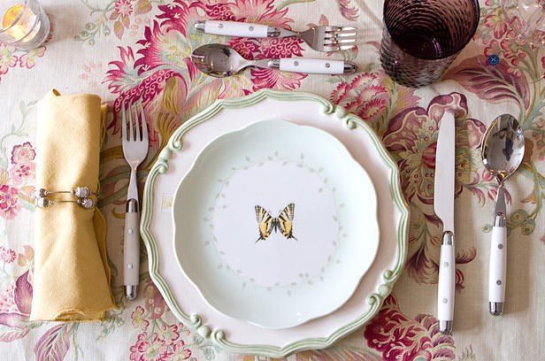

[sql]It is the little, pathetic attempts at Quality that kill. Robert M. Pirsig, Zen and the Art of Motorcycle Maintenance. I have separated the section on the language of SQL and the SQL Server platform into three sections: [tool] - Tools are typically scripts that extract or aggregate information in a useful way. Sometimes these are things that are too simple to justify the creation of a dedicated method. [presentation] - Presentations typically consist of an article interspersed with or accompanied by code samples to demonstrate a technique, tool, or utility. [utility] - Tools are typically methods that perform a function that is powerful enough and often used enough to justify the expense of building and deploying the object. |
[tool]The expectations of life depend upon diligence; the mechanic that would perfect his work must first sharpen his tools. Confucius. Over the years I've developed tools that I've used over and over. Just as a carpenter sharpens and cares for his tools each use, or builds custom tools or jigs as required, I've improved on and expanded my tool set with use, with experience, and with exposure to new environments. The intentions of a tool are what it does. A hammer intends to strike, a vise intends to hold fast, a lever intends to lift. They are what it is made for. But sometimes a tool may have other uses that you don't know. Sometimes in doing what you intend, you also do what the knife intends, without knowing. Philip Pullman. |

[presentation]Over the years I've built a number of presentations to share knowledge with my colleagues and to teach classes for clients. Some of these I've built simply to use as prototypes for code that I'm working on. New research into cognitive functioning, how the brain works, proves that bullet points are the least effective way to deliver important information. Neuroscientists are finding that what passes as a typical presentation is usually the worst way to engage your audience. Carmine Gallo, The Presentation Secrets of Steve Jobs. Others I've built while studying for certification exams, using the mechanism of "preparing for a class" to force myself to investigate the technique fully. I use and update these routinely, going back to them and renewing my knowledge of a tool or technique, getting boilerplate code, etc. Null values (distinct from the empty character string or a string of blank characters and distinct from zero or any other number) are supported in fully relational DBMS for representing missing information and inapplicable information in a systematic way, independent of data type. E.F. Codd, Rule 3, Codd's 12 Rules. |
[utility]Utilities go here. |